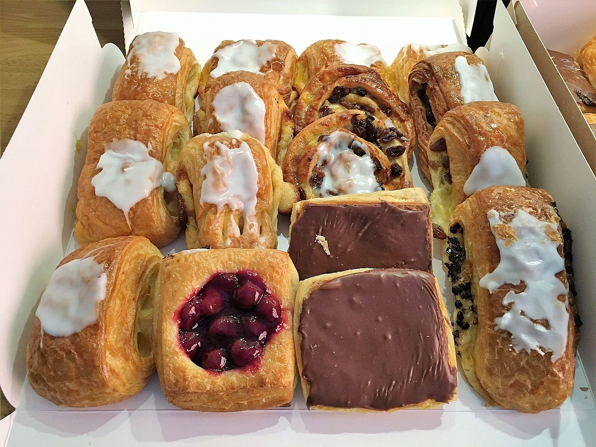

Vrijdag 19/01
Op mijn laatste observatie dag had ik koffiekoeken meegenomen om te bedanken dat ik daar mocht observeren. Vervolgens heb ik weer aan mijn PowerPoint verder gewerkt, ik heb er tekst en afbeeldingen toegevoegd. Rond 15:00 na de middagdrukte vroeg ik aan zijn mentor of het pasten om uit te leggen hoe de dagomzet verwerkt word. Hij legde me het uit hoe hij het elke avond aanpakt. Het viel me op dat veel mensen tegenwoordig met de bankkaart betalen. Ik stelde een vraag aan mijn mentor hoe hij de planning maakt over het personeel. Hij verwittigd het personeel door hun in te schrijven via een app. Daarna hadden we gegeten met de werknemers, ik had biefstuk met frietjes. Na deze observatieweek ben ik bewust geworden dat mensen in de horeca hard moeten werken met rare uren. Na een vriendelijk afscheid ben ik naar huis vertrokken.
Mijn dag in één woord is:
Dankbaar
Ik ben dankbaar dat ik daar mijn observatieweek heb mogen doen.
